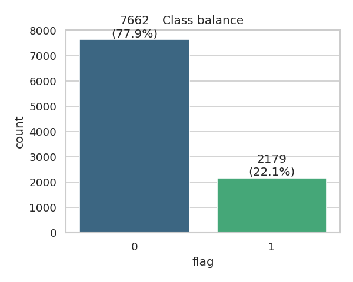
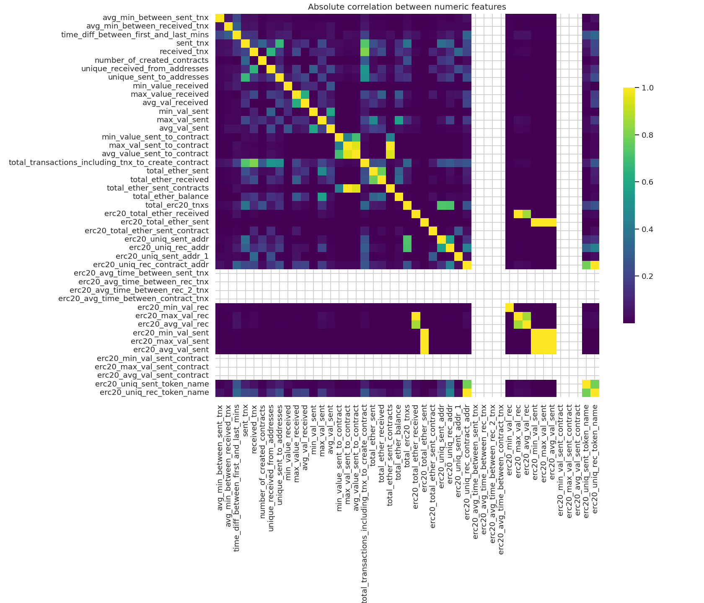
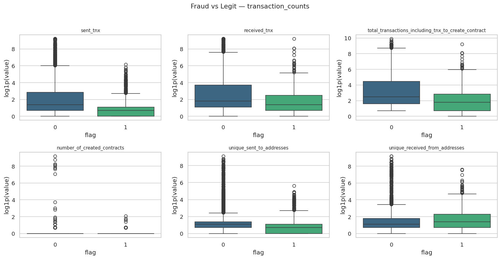
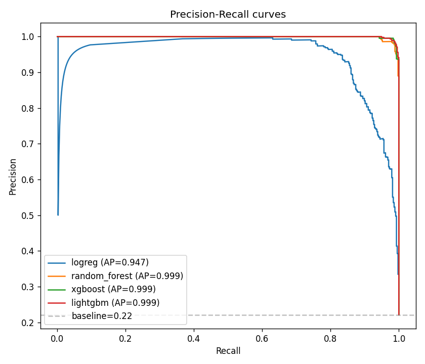
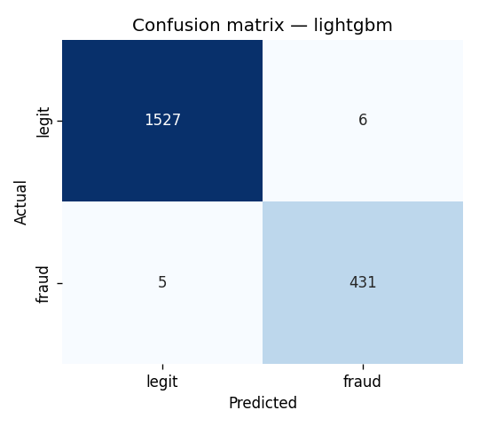
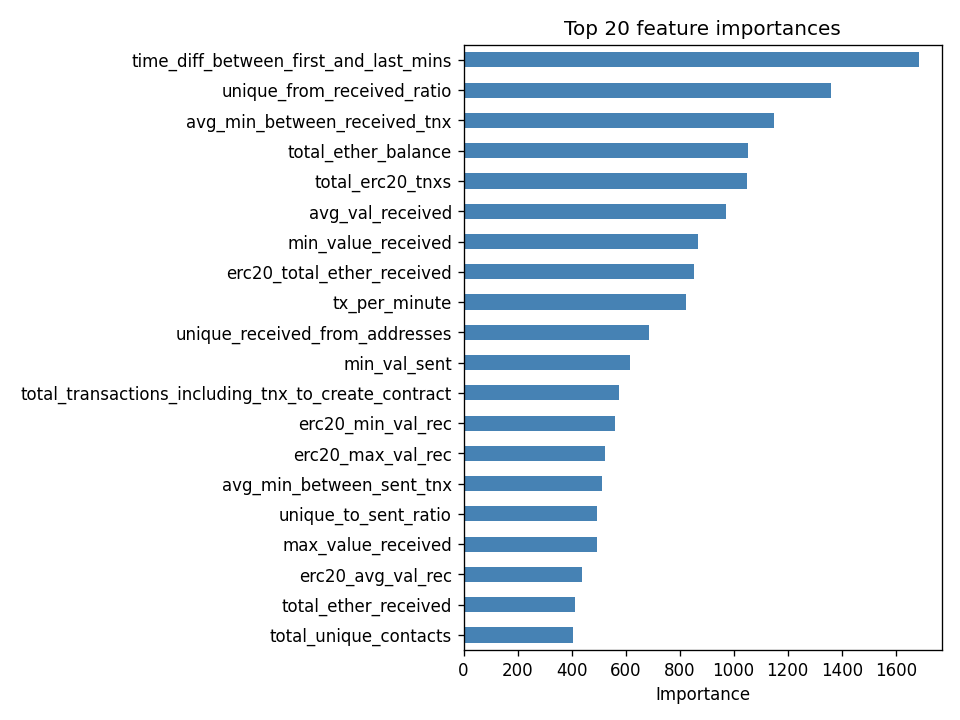

Course paper · Machine learning
Ethereum fraud detection from transaction features
Binary classification of Ethereum addresses as fraudulent or legitimate from 50 transaction-derived features. Test F1 is 0.987. Most of the work went into checking whether that number meant anything, and one check found that a naive random split had put exact copies of 112 test rows into training.
- 0.987F1, held-out test
- 5.7%of test rows leaked by a naive split
- 0%after the group-aware split
The problem and the data
Every Ethereum account is identified by an address, and every transaction it has made is public. An address can therefore be described purely by its behaviour: transactions sent and received, ether moved, time active, number of distinct counterparties, whether it ever touched ERC20 tokens. Phishing wallets, Ponzi payouts and laundering hops behave differently from ordinary accounts, so a classifier over those features should be able to separate them.
The dataset is the public Kaggle set built from real network addresses: 9,841 accounts, 50 numeric features each, one binary target FLAG. About 22% of the addresses are labelled fraud. That is imbalanced, well short of the 1-in-10,000 imbalance of card-fraud problems. At this ratio accuracy is useless and PR-AUC is still well-behaved.

The work is five sequential notebooks: EDA, preprocessing, feature engineering, modelling, evaluation. Shared logic lives in one helpers.py that the notebooks and the pytest suite both import.
EDA findings
Three findings mattered.
Zero inflation. 21 of the 50 columns are more than half zeros. Most of them record a feature that does not apply to the address. An account that never interacted with an ERC20 token has no ERC20 statistics, and "no ERC20 activity" is encoded identically to "zero ERC20 volume". A zero meaning not applicable carries different information from a zero meaning a measured zero, so I added explicit boolean flags for that distinction instead of leaving the model to infer it from a wall of zeros.
Duplicate columns. 21 pairs of columns are bit-for-bit identical in the source CSV, mostly in the erc20_avg_time_between_* and erc20_*_val_sent_contract families, all of them all-zero across every row. The duplication is between features, not between a feature and the target, which makes it an upstream data-quality problem rather than leakage. I kept the columns. Trees are indifferent to redundant inputs, and the only cost is feature importance spread across the copies. For production I would drop them; the cleanup sits commented-out in notebook 02.

The classes separate on individual features. Ranking features by |median(fraud) − median(legit)| / std puts the time span between first and last transaction on top, followed by the transaction counters, sent_tnx, received_tnx, unique_sent_to_addresses and total_ether_received. A fraudulent address has a median lifetime of 5 days against 81 for a legitimate one, makes 5 transactions against 11, deals with 1 unique recipient against 2, and receives 1.68 ether against 71.72. Short-lived, low-volume, narrow counterparty set.

Feature engineering and the preprocessing pipeline
Notebook 02 normalises column names, drops the identifier columns (index and address), and coerces the two categorical token-name columns to proper objects with real NaNs. Notebook 03 adds four groups of derived features: log1p transforms of the six heavy-tailed monetary columns, send/receive ratios and net ether flow, the boolean activity flags, and aggregates such as total unique counterparties.
Preprocessing is a single ColumnTransformer: median imputation plus standard scaling for numerics, most-frequent imputation plus one-hot encoding for the two categoricals. It is fitted on the training split only, saved to disk, and reloaded unchanged in notebooks 04 and 05. Fitting it on the full frame would push test-set medians and scaling constants into training. The inflation from that is small, and it is entirely avoidable.
The leak
Notebook 02 deliberately does not call drop_duplicates(). The rest of this section is the reason.
Once the address column is gone, 574 rows in the dataset have an identical feature profile. They collapse into just 28 distinct profiles, and about 92% of them are fraud. The cause is mundane: these are fraud addresses with almost no activity. An address that received one transaction and did nothing else produces the same 50-number vector as any other address that did the same. They are genuinely different addresses with genuinely the same features.
Dropping them throws away real labelled examples of the minority class. Keeping them breaks the split. Under a plain stratified random split, exact copies of one profile land on both sides, and the model gets evaluated on rows it memorised during training. I measured that in notebook 01 rather than reasoning about it:
Under a random stratified split, 112 of 1,969 test rows (5.7%) had an exact copy in train. Almost all of them were fraud.
That is 5.7% of the test set, concentrated in the class the metrics are most sensitive to. A tree only has to recognise those rows to score them correctly, and no standard metrics report would show that it was happening.
The fix is a group-aware split (grouped_stratified_split in helpers.py). Hash each row's feature vector, factorise the hashes into group ids, and hand those ids to StratifiedGroupKFold. Identical profiles are forced onto the same side of the split while the 78/22 class ratio is preserved on both. After that, 0 test rows have a copy in train.
Tree metrics did not drop once the free rows were taken away. I expected them to. PR-AUC stayed around 0.999 on either side of the change. The contamination was not what produced the high numbers; the features separate the classes on their own. Fixing the split was still worth doing, since the alternative is reporting 0.999 while privately wondering how much of it was memorisation.
Caveat: the before and after test sets are not the same rows, so this is a sanity check rather than a controlled experiment. A cleaner design would fix the test set and vary only what the model saw in training. For the purpose it served, the conclusion of no large drop is robust enough.
Model selection
Four models, all imbalance-aware: logistic regression and random forest with class_weight='balanced', XGBoost with scale_pos_weight=3.5, LightGBM with is_unbalance=True. The logistic regression is a baseline rather than a contender. Selection happens in notebook 04 on stratified 5-fold cross-validated PR-AUC over the training split, and the choice is written to reports/cv_results.json before the test set is touched at all.
| Model | PR-AUC, mean | std |
|---|---|---|
| Logistic regression | 0.9134 | 0.0162 |
| Random forest | 0.9951 | 0.0014 |
| XGBoost | 0.9958 | 0.0020 |
| LightGBM | 0.9959 | 0.0019 |
The three tree models are separated by less than 0.001, well inside their own fold-to-fold standard deviations. For practical purposes they are the same model. LightGBM wins and gets copied to models/best_model.joblib. On a different seed any of the three could come first, and a real decision between them would come down to training time, model size or explainability rather than this ranking.
The same fact is the argument for selecting on CV rather than on test scores. Picking the model with the best test number, when the candidates differ by less than the noise, picks whichever one got lucky on that particular 1,969 rows.
Results
The test set is used once, to confirm the choice already made.
| Model | Precision | Recall | F1 | ROC-AUC | PR-AUC |
|---|---|---|---|---|---|
| Logistic regression | 0.7193 | 0.9404 | 0.8151 | 0.9817 | 0.9467 |
| Random forest | 0.9795 | 0.9862 | 0.9829 | 0.9996 | 0.9987 |
| XGBoost | 0.9817 | 0.9862 | 0.9840 | 0.9998 | 0.9992 |
| LightGBM | 0.9863 | 0.9885 | 0.9874 | 0.9998 | 0.9994 |

Logistic regression fails in a specific way. It catches 94% of fraud and is wrong 28% of the time it raises a flag. class_weight='balanced' pushes it hard toward positives, and a linear boundary cannot express what the trees find. The gap between 0.947 and 0.999 PR-AUC is the size of the non-linear structure in this data.


Scope of the result
An F1 of 0.987 on 1,969 rows of tabular data is a claim about one snapshot of one labelled dataset. It does not say that fraud on Ethereum is solved. The labels came from addresses reported and confirmed as fraudulent, and reported fraud is a biased sample of fraud. The crude, short-lived kind gets reported, and it is also the kind these features describe best. A fraudster who deliberately mimics normal traffic volumes over months would not look like the 22% in this file, and nothing here measures how such an address would be scored.
The group-aware split does not fully solve leakage either. It removes exact duplicate profiles. Near-duplicates, such as addresses from the same campaign, funded from the same source, with almost but not quite the same statistics, still cross the split, and I did not measure them. Measuring them needs clustering by similarity rather than hashing by equality, plus a judgement call about the threshold.
What the numbers do support: the features carry real signal that is not an artifact of contaminated evaluation, and the three gradient-boosted / bagged tree models extract it equally well. That is a narrower claim than 0.987 makes it sound, and it is the one the pipeline actually established.
Next steps
- Tune XGBoost and LightGBM properly with RandomizedSearchCV or Optuna. Everything here runs at default-ish hyperparameters. A small lift is plausible, though not a large one from 0.999.
- Move the decision threshold off 0.5. It is the right threshold only if a missed fraud address and a false accusation cost the same, which they do not.
- Add SHAP on top of the global feature importance, so an individual flag can be explained to whoever has to act on it.
- Measure near-duplicate leakage, not just exact-duplicate leakage.
The course paper, the five notebooks, helpers.py and its tests are all in the repository.